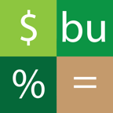

This app is a collection of calculators that will assist you when growing corn crops. They are Silage Moisture Cost Adjuster, Maturity Date Predicator and Grain Yield Estimator. Instructions are included with each calculator individually.
Version 1.51
This app was developed by the UW-Madison Nutrient and Pest Management (NPM) program. We would like to acknowledge the following individuals who helped on this project:
Joe Lauer, UW-Madison Agronomist
Roger Schmidt, NPM Computer Specialist
Mo Lu, NPM Computer Programmer
Ramsey Statz, NPM Computer Programmer

Copyright © 2014 Board of Regents of the University of Wisconsin System